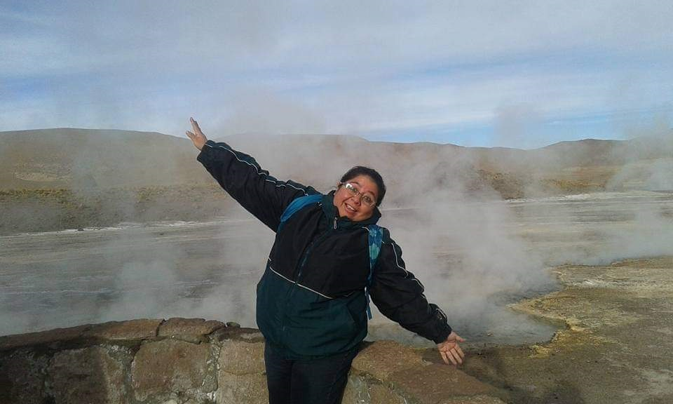
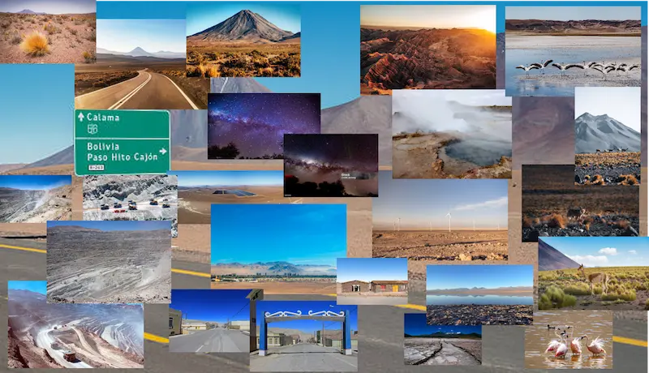

Pamela S.T. González Ramírez
About Me

Hello! My name is Pamela Soledad Teresa González Ramírez, and I am from the city of Calama, located in the far north of Chile a desert region known for mining. I have a strong interest in business administration, particularly in the field of finance. I graduated in 2000 with a degree in Business Administration, specializing in finance and auditing a field I am passionate about. My hobbies are primarily reading and writing; I enjoy reading all kinds of books and writing stories and narratives. Currently, I am pursuing professional studies in programming and web development. I decided to venture into this completely different field, and so far, I have really enjoyed creating a website from scratch.
Calama, Chile

Loa Province is located in the Antofagasta Region of Chile. It borders the Tarapacá Region to the north, Bolivia and Argentina to the east, the Antofagasta Province to the south, and the Tocopilla Province to the west. Its provincial capital is Calama. Calama is a city situated in the far north of Chile, in the driest desert in the world. It is a transit point for both tourists and miners, as it is located near several world-renowned mines, such as Chuquicamata, the world's largest open-pit mine, and other smaller mines like El Abra, Radomiro Tomic, Gabriela Mistral, Spence, and Sierra Gorda, among others. The main metal extracted is copper. In addition to mining, visitors can explore typical desert tourist attractions, such as the Valley of the Moon, Death Valley, Chiu Chiu Lagoon, and the El Tatio Geysers. Other towns with colonial architecture can also be visited, such as San Pedro de Atacama, Chiu Chiu, Toconce, and Cupo. Despite being a desert region, it is traversed by the Loa River, which has unique characteristics. Due to the desert environment, it has maintained a flow (in some sections practically nonexistent) thanks to the upwelling of groundwater.